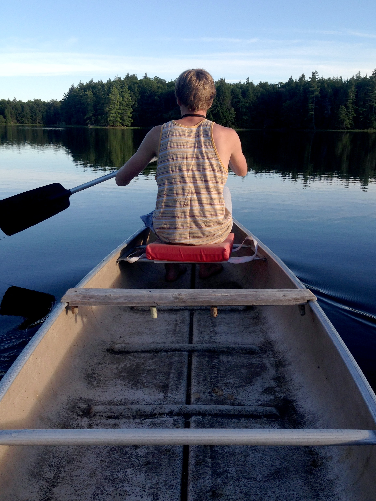
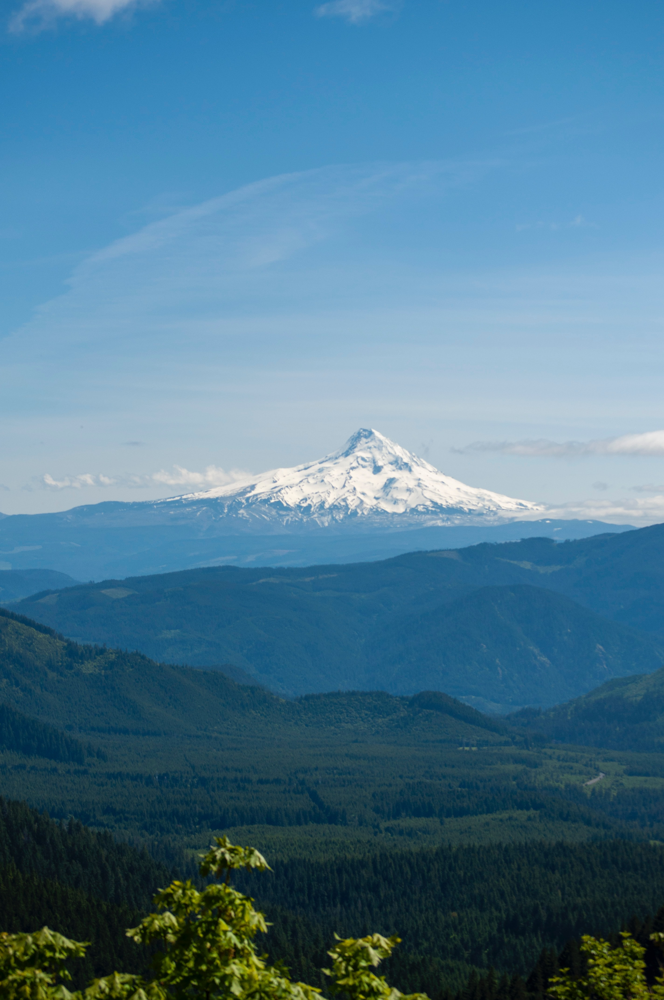
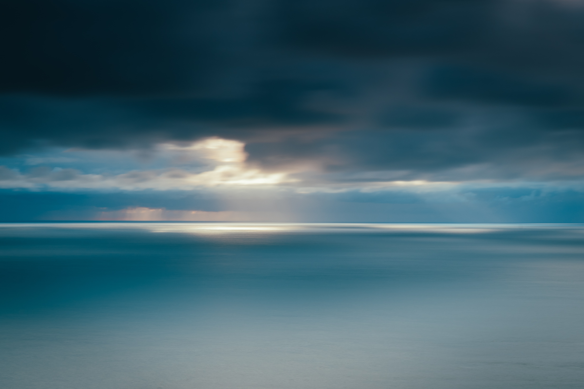

Robbie Lens Photographie
Où professionalisme s’allie avec passion. Depuis plus de 5 ans maintenant, j’exerce mon métier avec la passion qui m’anime : capturer l’essence de chaque instant.
UN PROJET ? ÉCRIVEZ-MOIMon dernier projet



